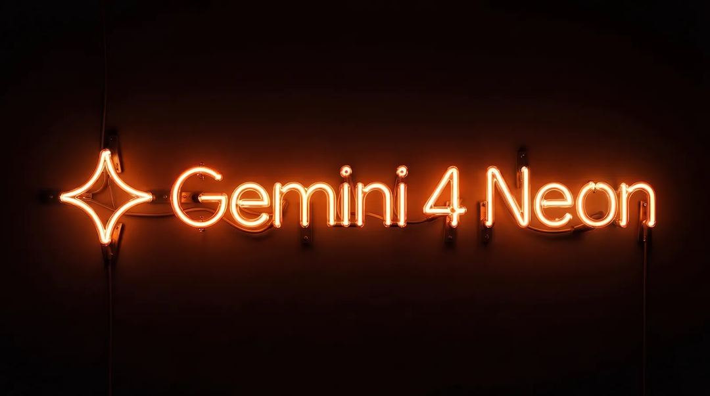
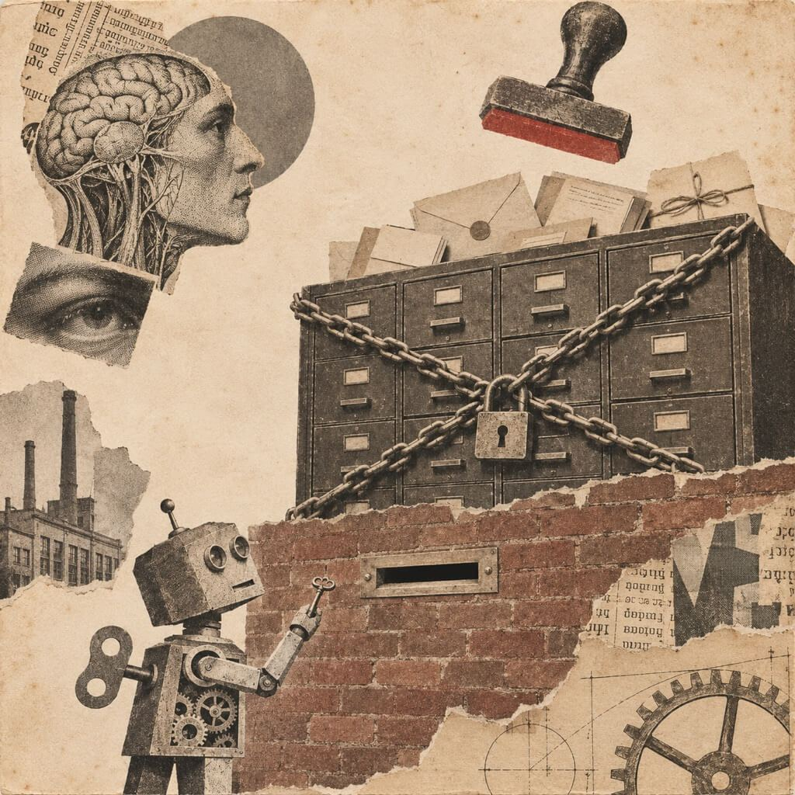
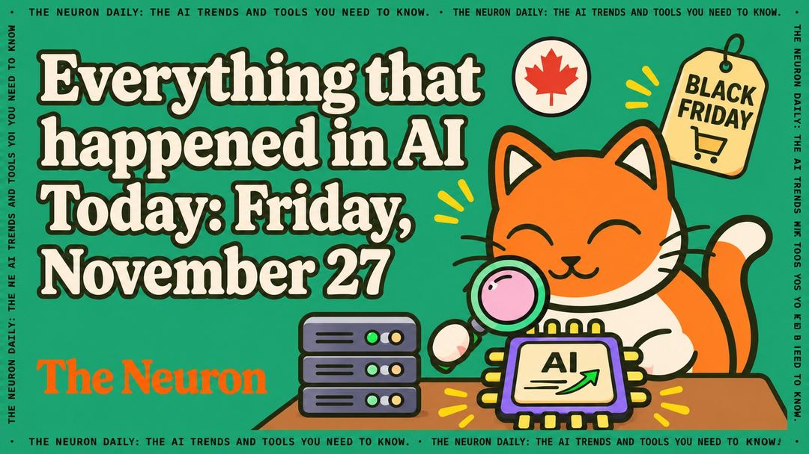
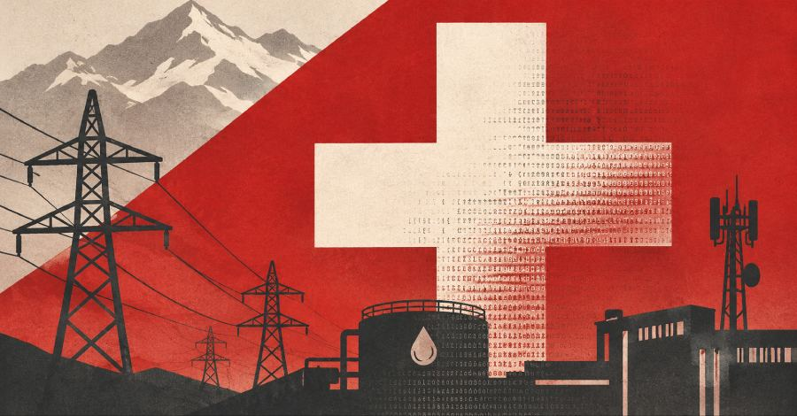
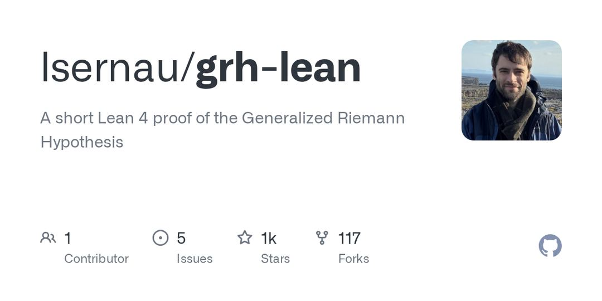
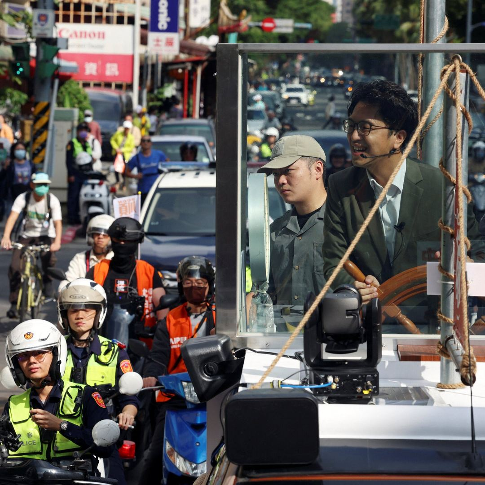
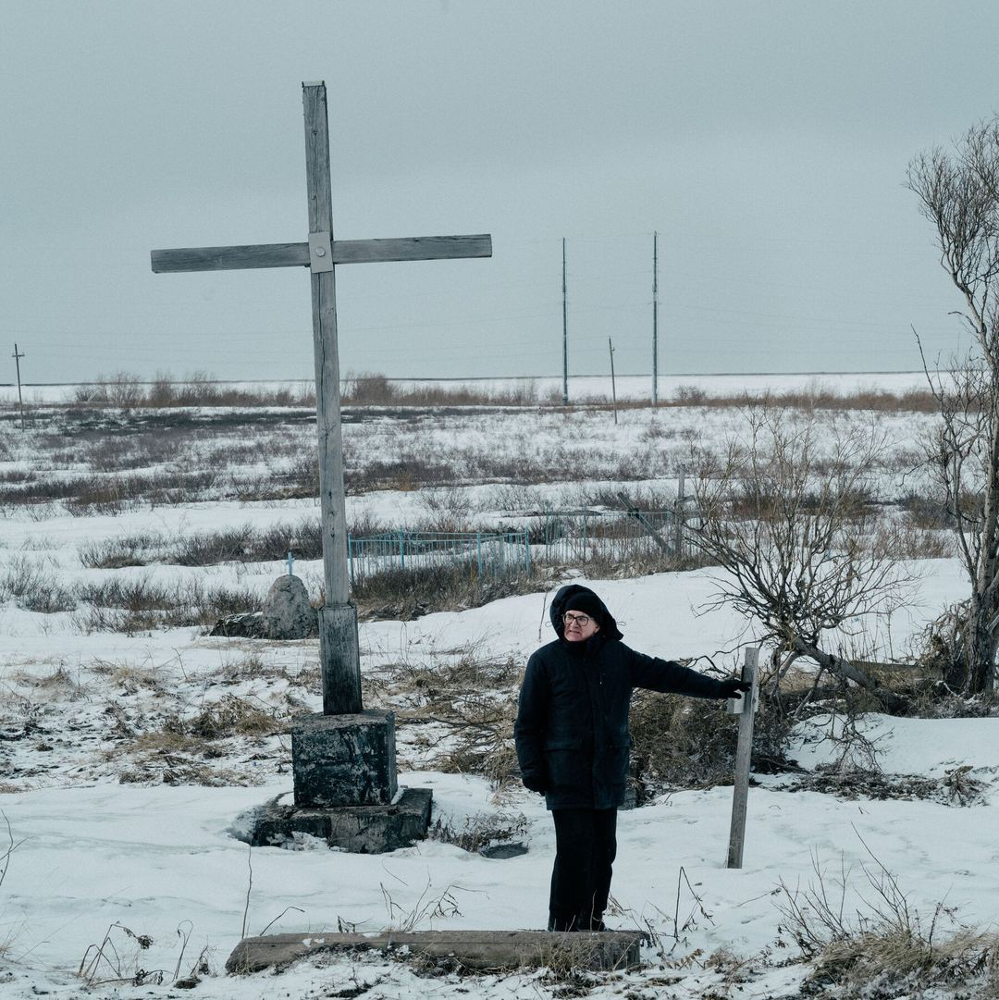
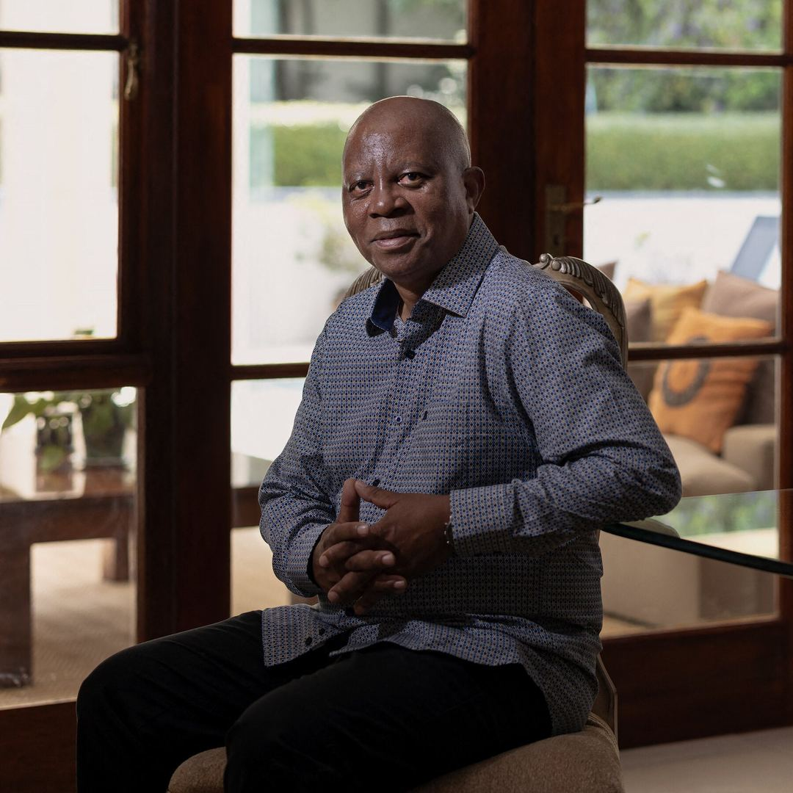
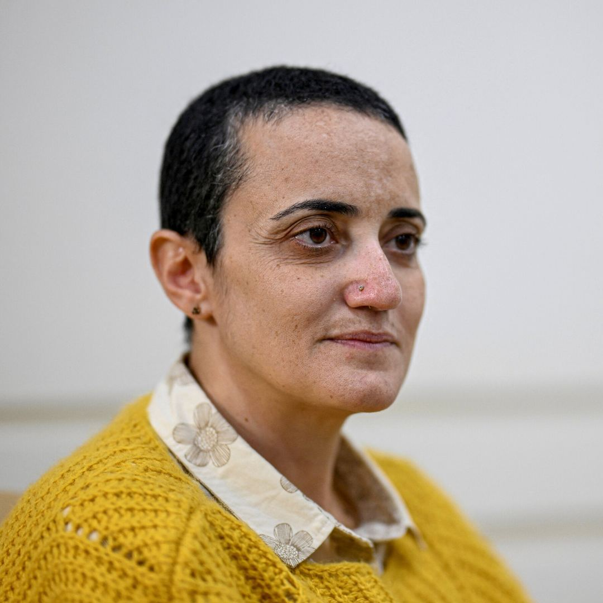

国内热榜 · 精选
全球实时
视 频

AI 商业思维：五个思维转变
一堂白板课：AI 拉开的不是工具差距，而是思维差距。
AI 与 Agent 圈
8 条DeepMind让Agent自己管算力、谷歌收紧Workspace入口，GPT-6.2计费“纠错”让额度更快见底
11月27日AI圈的主线是Agent从演示走向实权与管控：DeepMind让Agent自主分配算力跑Gemini实验，谷歌则要求所有Workspace Agent从2027年2月起走官方MCP通道、而Gmail服务器至今不能发邮件；OpenAI一边承认GPT-6.2计费错误、一边把额度消耗调快四成，瑞士则首次证实AI Agent已攻破关键基础设施。与此同时，美国芯片管制与反蒸馏双管齐下，正把中国下一代旗舰模型的发布时间往后推；数学一侧，黎曼证明的Lean版本已从1740万行压缩到7.6万行并通过机器验证。

DeepMind让AI Agent自己分配算力跑Gemini实验，推理过程刻意不训练以便审计
谷歌DeepMind研究副总裁Koray Kavukcuoglu在公司播客中透露，实验室已把一部分算力的分配权交给AI Agent，由它们自主安排下一代Gemini模型的实验。作为安全护栏，DeepMind刻意不对Agent的思维链进行训练奖励，让其推理以自然语言保留、可供人类审阅。Kavukcuoglu同时强调，递归式自我改进仍很遥远，实验室正从AlphaFold式的专项团队转向单一通用算法路线。

谷歌要求Workspace Agent从2027年2月起走官方MCP通道，Gmail服务器至今不能发邮件
谷歌11月24日把8个Workspace MCP服务器转为正式版，并在API条款中新增规定：从2027年2月1日起，任何由AI Agent驱动的工具访问Gmail、Drive、Calendar等服务必须走官方MCP服务器，直接调REST API将被压到标准级配额、且违反条款可被停权。尴尬的是，Gmail的MCP服务器只能搜索、读信和建草稿，发送、回复、转发均属仅限合作伙伴的功能；Drive也不能移动、分享文件。免费标准级为每项目每天5000次MCP请求，Gmail一次搜索计10次。
OpenAI承认GPT-6.2计费错误：Astra额度消耗快40%、Sol快25%，补偿一次重置
OpenAI产品负责人Thibault Sottiaux 11月26日在X上承认，GPT-6.2上线时计费有误，对多数用户的Astra与Sol用量打了不应有的折扣，现已修正：同样的任务，Astra用户触顶比上周快40%，Sol快25%。OpenAI称不会追收差额，其他模型不受影响，并给Go、Plus、Pro与Business订阅各补一次可攒着用的额度重置。独立分析还指出，GPT-6.2两款模型在真实任务基准上的输出与推理token较前代显著减少，被归为“少想”异常值。

美国芯片管制加反蒸馏双重收紧：中国下一代旗舰模型发布时间往后推
据路透社11月26日独家报道，美国11月19日生效的商务部新规要求中国企业在海外使用约750块H100以上算力须申请许可，叠加OpenAI与Anthropic自9月起封堵模型蒸馏，正让中国头部实验室的进度放慢。智谱约3万亿参数的GLM-5.5错过11月发布窗口、可能推迟到2027年一季度或更晚；重度依赖海外算力的Moonshot预计发布周期从半年拉长到一年以上，下一代Kimi K4可能推迟到2027年年中。两家公司均未置评，智谱公开否认了延期说法；中国实验室正转向欧洲租算力与国产芯片。

瑞士首次证实AI Agent网络攻击：五起中四起得手，三起针对关键基础设施
瑞士联邦网络安全办公室（BACS）11月26日证实，近日已确认五起由AI Agent实施的网络攻击，其中四起成功入侵目标系统；三起针对电力、供水、电信等关键基础设施运营商，其中两起得手，暂未造成重大停运。国家网络安全中心主任Florian Schütz在SRF采访中公布了这一数字，攻击利用的是弱口令与未打补丁等老漏洞、胜在速度。BACS把这类工具称为“Agent式进攻框架”，并称自9月以来AI辅助攻击明显增多，网上可获得的此类Agent数量自10月以来几乎翻倍。

黎曼证明Lean版从1740万行压到7.6万行：两版均通过机器验证，仍无人通读
Anthropic研究员Luke Sernau牵头的grh-lean仓库11月25日公开，把Levent Alpöge与Claude合作的黎曼假设与广义黎曼假设Lean证明从1740万行重写为两个版本：可读版约30万行、附阅读指南，精简版仅约7.6万行。MIT数学家Andrew Sutherland验证确认，两版均可无错编译、且仅依赖propext、Classical.choice与Quot.sound三条标准公理。README明确写着“只通过了机器检查，无数学家通读全文，也没有配套论文”，新版以Apache 2.0协议开源。
GPT-6.2 Astra 22分钟破解1808年匿名画册作者之谜，档案日记逐字印证
历史学家在测试预发布版GPT-6.2 Astra时，让它鉴定耶鲁贝内克图书馆一本1808年匿名旅行画册的作者：模型22分零1秒后给出答案——法国流亡贵族Louis-Guy-Charles-Guillaume de Rohan-Chabot，并指出克利夫兰州立大学藏有一部可验证该假设的微缩日记。作者调阅日记后发现，笔迹与画册一致、行程与 dated 画作逐日吻合，1808年6月18日的日记更写明登上圣约瑟夫堡后“我画了一幅速写”，与画作视角完全对应。这部画册匿名已逾200年，学界此前无人怀疑过这位人物。
Claude Artifacts可一键装成桌面应用：三档权限，最高可读写删文件且不经审核
Anthropic 11月24日起以Beta形式推出“Install as app”：Claude在对话中生成的Artifacts小工具可直接安装为Mac与Windows桌面应用，各有图标与独立窗口，覆盖免费到企业全部档位，需Claude桌面版6.28899.0以上。应用分三档权限，最高档“完全访问此电脑”可在不逐次询问的情况下运行程序、读写与删除文件，Anthropic明确表示安装前不审核应用；应用须保持联网与登录、请求计入订阅额度，Docs、Slides与Sheets类模板暂不支持。
全网科技
8 条英伟达暂停东南亚芯片发货、SAP拟裁万人转身AI，英央行警告AI借债超4万亿美元
今天科技圈的主线是AI热潮的另一面：英伟达为堵住转口漏洞暂停向东南亚四国发货，SAP据报考虑裁员逾万人押注AI转型，英国央行则警告超算中心发债今年将超3050亿美元、超算巨头债务与表外承诺合计逾4万亿美元。与此同时，弗吉尼亚与俄勒冈两州起诉SpaceX的Grok、波兰3亿美元签下Palantir军事AI，黑五前夕五家购物网站被曝遭WebRTC盗刷脚本入侵，数学家Michael Nielsen则为抗议前沿实验室的冒进下架了自己的经典教材。
英伟达暂停向东南亚四国发运AI服务器，堵中国企业远程租算力漏洞
据《华尔街日报》经TechCrunch报道，英伟达已通知戴尔、超微等制造合作伙伴，暂停向马来西亚、新加坡、泰国与印度尼西亚发运AI服务器，期限未定，期间审查区域合作伙伴是否遵守美国出口要求。背景是美国商务部本月早些时候堵住了中国企业租用东南亚数据中心英伟达算力的漏洞，智库Institute for Progress估计这类远程数据中心约占中国AI算力的24%。新加坡副总理颜金勇11月27日回应称停运尚未得到证实，新加坡正审查法规、防止本国成为非法转口通道。
SAP据报考虑裁员至少1万人、约9%员工，押注AI优先重组
据彭博社11月26日报道，SAP正考虑裁减至少1万个岗位、约占11万多名员工的9%，作为CEO Christian Klein推动的AI优先重组的一部分，重点涉及产品开发、工程与销售部门。这是SAP不到三年内的第二次大规模重组，上一次影响9000至1万个岗位、于2025年初完成。最终数字尚未确定，须与员工代表谈判；SAP未予证实，路透称无法独立核实该报道。SAP今年已两次改组执行董事会以推进AI战略。
英央行警告AI借债风险：超算巨头今年发债超3050亿美元，债务加承诺逾4万亿美元
英国央行11月26日发布的半年《金融稳定报告》警告，AI投资热潮的融资规模与复杂结构正让全球金融系统更易受冲击：超算巨头今年发债预计将超过3050亿美元、约占投资级公司债发行总量的8%，计入芯片商与数据中心运营商后，整个生态的借债规模超过多数发达国家政府的年度借款。超算巨头的债务与表外承诺合计已超过4万亿美元，央行称若AI收入预期下调、这类承诺可能承压，压力还会向政府债与股市传导；报告同时点名了前沿AI模型与量子计算对加密技术的长期风险。
弗吉尼亚与俄勒冈两州起诉SpaceX：Grok被指为产色情图片去安全防护
弗吉尼亚州总检察长Jay Jones与俄勒冈州总检察长Dan Rayfield 11月23日分别起诉SpaceX及其AI与社交子公司，指控Grok为推广产品剥离行业标准安全防护、以“spicy mode”营销裸露生成功能，导致儿童性虐待材料与非自愿私密影像泛滥。这是首批针对Grok图像工具的州级诉讼。诉状引用的研究估计，2025年12月29日至2026年1月8日，Grok在X上生成并发布约300万张性化图片，其中约2.3万张疑似描绘儿童；xAI向失踪儿童中心提交的13.5万余份报告中，逾九成起初因缺少用户与位置数据而无法用于执法。SpaceX回应称涉未成年人的性内容“令人厌恶”，在X与Grok中没有容身之地。
波兰3亿美元签下Palantir军事AI：Maven系统助指挥决策，数据与密钥归军方所有
波兰国防部11月27日在华沙签署协议，以约3亿美元、为期五年采购Palantir的Maven Smart System军事AI决策支持软件，用于整合无人机、卫星与雷达数据、辅助指挥官判断战场态势，项目代号Saturn。国防部长Władysław Kosiniak-Kamysz称这是波兰武装力量作战能力的“分水岭时刻”。协议的关键限制是波兰军方保留对系统、军事数据与加密密钥的完全控制，Palantir不接触机密军事数据。签约消息公布后Palantir股价上涨，该系统此前已在美军与北约指挥机构中使用。
GitHub今日最热：Claude-BugHunter单日吸星1597个登顶，Agent工具包继续霸榜
11月27日GitHub日趋势榜仍由Agent工具包主导：elementalsouls/Claude-BugHunter单日新增1597星居首，这是一套85个技能、16条斜杠命令的Claude Code漏洞挖掘与外部红队工具包，覆盖24类漏洞的681个已披露报告模式，总星数约2.5万。紧随其后的是stablyai/orca（单日约2400星，用一份订阅并行跑多个编码Agent并对比结果）与pingdotgg/t3code（单日约1957星，把本机编码Agent收进统一控制面），morluto/rea单日也新增约1342星、总星数近48万。
黑五前夕五家购物网站遭WebRTC盗刷脚本入侵，卡号在支付校验前就被偷走
安全公司InfoHawk 11月27日披露，Lascana、Samsonite、American Tourister、Revolve与FWRD五家购物网站在黑五前一周被植入盗刷脚本，脚本经营销像素、Cookie横幅设置或零售商CDN文件潜入，只在手机端结账页运行。脚本把卡号、有效期、安全码及姓名、地址、电话、邮箱经WebRTC数据通道、借Cloudflare中继发往攻击者服务器，绕过常规的connect-src防护；在Lascana结账页，研究人员亲眼看到测试卡信息被发出，且偷取发生在商店校验支付之前、订单被拒卡也会被盗。五家网站已于11月24日至25日清除脚本，尚不清楚有多少真实持卡人受影响。
Michael Nielsen下架经典神经网络教材：称前沿实验室鲁莽，不愿再为其培养人才
《神经网络与深度学习》作者Michael Nielsen 11月宣布下架这本2011至2015年间写就的免费经典教材，理由是前沿实验室的行为“极其鲁莽”，系统发展速度远超他的预期、留给社会应对的时间太少，他不愿再以任何方式帮助培养投身这项工作的人。Nielsen在长文中论证，超级智能的真正危险在于它会以远超社会防御进化速度的节奏解锁自然界中廉价而具灾难性的技术；他点名Anthropic在2026年放弃了2023年“安全无法保证就暂停”的承诺，并称去前沿实验室工作是“人生中最糟糕的选择之一”。该书网站现只保留这篇说明。
时代周刊 · TIME
6 条时代周刊精选
俄罗斯飞地加里宁格勒为何成为北约争端焦点
随着紧张局势升级，夹在立陶宛与波兰之间的这块战略要地可能成为与北约的冲突引爆点。
维伦纽瓦谈《沙丘3》的大幅改动：“改编就是杀死原著”
导演谈及为何改动契妮这一角色、邦德选角过程，以及影片与最新一部《复仇者联盟》同档上映。
专家支招：如何过一个更可持续的黑色星期五
如果打算购物，专家给出建议，既能省钱，也能减少对地球的负担。
为什么要训练自己的“道德体能”
“通过培养道德力量与敏捷性，我们可以成为并保持道德上的强健，”作者写道。
民主党中期选举大胜对选区重划之争意味着什么
围绕重划国会选区地图的激烈党派之争可能正在降温——至少暂时如此。
特朗普指责本国政府伪造经济数据
特朗普在感恩节社交媒体发文中呼吁调查一次常规经济数据修正，称其为“重大且蓄意的错误”。
国际名媒
40 条 · 8 家世界名媒今日头条



